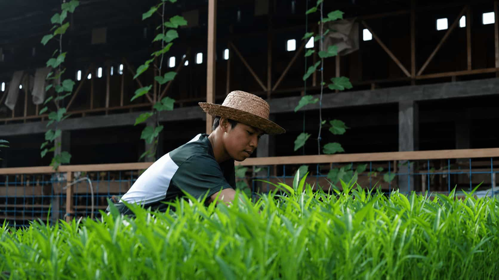
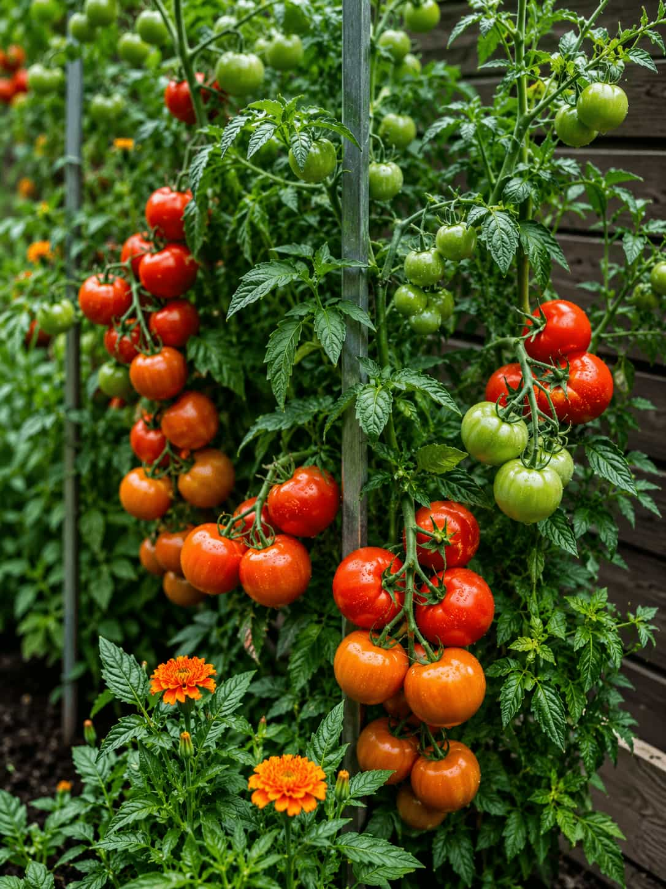
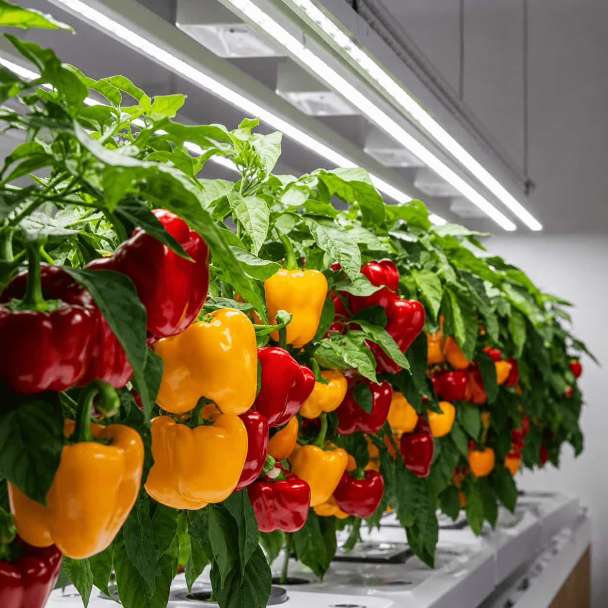
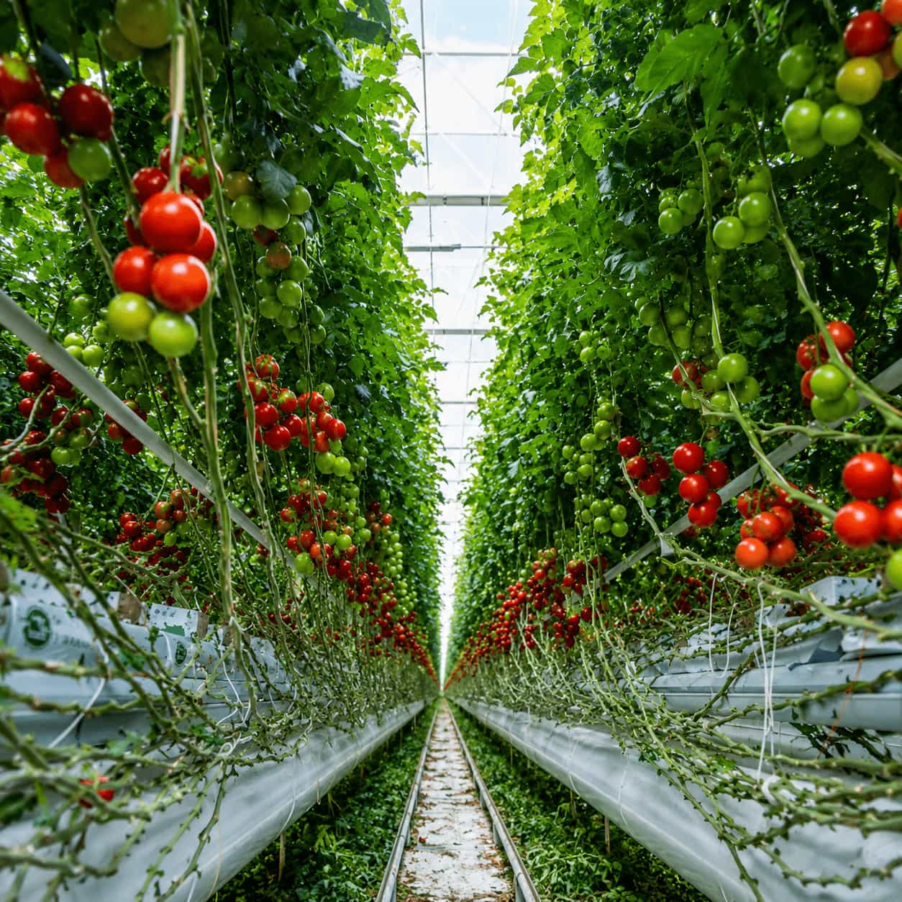
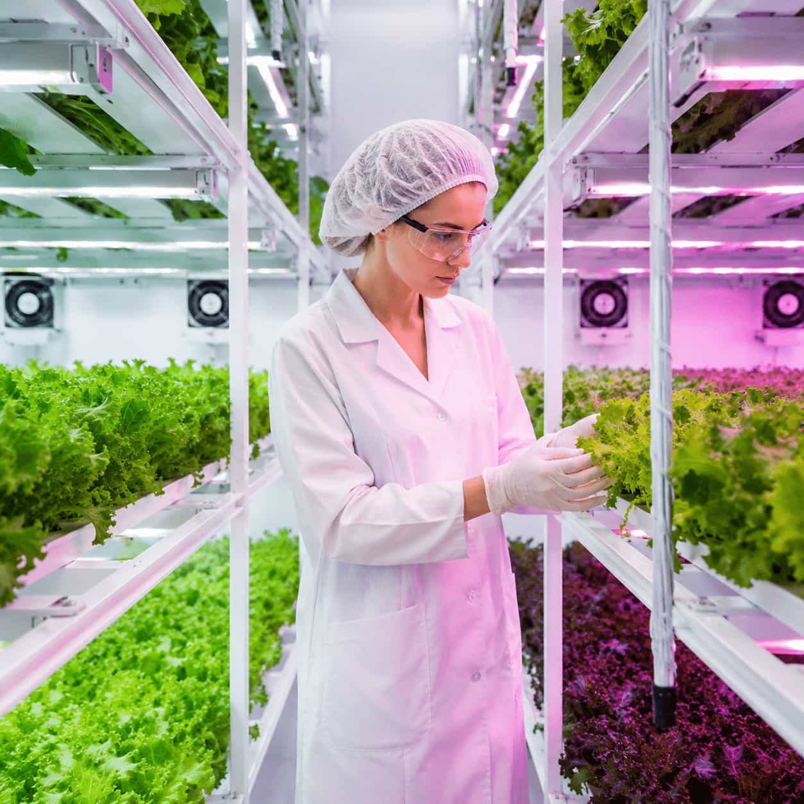

Urban Growing, Made Practical
Grow More in Less Space
Clear guides for herbs, microgreens, hydroponics, and compact indoor growing.
Clear guides for herbs, microgreens, hydroponics, and compact indoor growing.
Compare growing systems, lighting, watering, media, and everyday maintenance.
Explore practical considerations for apartments, basements, garages, and small commercial spaces.
Review usable width, height, light, airflow, water access, surfaces, crop size, root space, and the routine available for regular care.
Consider containers, hydroponic components, lighting, watering, drainage, cleaning, observation, and ongoing maintenance together.
Start with broad planning questions before comparing individual crops, equipment, lighting, or growing methods.
Review the available area, crop size, natural and supplemental light, nearby power, water access, drainage, airflow, surfaces, storage, and the time available for regular observation.


Choose a topic to see the space, routine, and questions that commonly shape the setup.
 Microgreens
Microgreens
Microgreens can suit shelves, counters, and other limited areas when trays, moisture, light, airflow, and cleanliness are planned together.
Start with fewer trays than the shelf can hold. A smaller first setup makes moisture, airflow, cleanliness, and crop response much easier to observe.
A hydroponic system is easier to manage when the reservoir, roots, tubing, pump, drainage, and cleaning points remain visible and physically accessible.
Choose a grow light around the usable crop area rather than the dimensions of the room. Placement, coverage, heat, timing, and plant response matter together.
Automatic watering reduces repeated manual work, but it does not remove the need to inspect emitters, drainage, moisture, connections, and reservoir conditions.
Indoor strawberries combine roots, flowers, pollination, airflow, light, moisture, and fruiting. Change one condition at a time so plant response remains readable.

Indoor growing becomes easier to understand when the space, crop, system, and routine are considered together.
Clear explanations help readers understand the first decisions without unnecessary complexity.
Compare how common methods differ in space use, maintenance, and everyday attention.
Build context around lighting, airflow, temperature, water, and root conditions.
Explore practical considerations for apartments and early small-commercial planning.
Compare broad setup characteristics before deciding which method deserves deeper research.

A passive method often explored for smaller plants and straightforward introductory setups.
Suitable space: compact shelves and counters Compare the method
Roots are supported above an aerated solution, making reservoir access and observation important.
Suitable space: dedicated indoor growing areas Compare the method
Delivery points, tubing, timing, drainage, and maintenance shape the practical setup.
Suitable space: organized multi-container areas Compare the method
Vertical systems may use floor area efficiently while adding access, lighting, and flow considerations.
Suitable space: rooms with usable height Compare the method
Individual containers can support flexible crop placement when drainage, media, and light are considered.
Suitable space: windows, shelves, and floor zones Explore the context
Indoor crops respond to a combination of conditions rather than one isolated setting.
Consider placement, duration, coverage, heat, and the response of each crop.
Match delivery, drainage, reservoir access, and observation to the chosen method.
Think about circulation around leaves, containers, roots, equipment, and the room.
Review the crop, equipment heat, room conditions, and changes across the day.
Explore how connected growing conditions influence the questions you should ask before choosing equipment.

Fixture form, distance, coverage, heat, timing, and plant response all shape how a grow light functions in a real space.
Understand Grow LightsA manageable plan connects the room, crop, method, and recurring tasks before equipment is added.
Follow the Starting PathReview usable width, height, surfaces, nearby power, water access, drainage, airflow, and how the area is used each day.

Consider plant size, root space, light needs, moisture sensitivity, routine attention, and whether the crop fits the available conditions.

Look at component count, maintenance, root access, cleaning, water movement, drainage, crop support, and the consequences of interruptions.
Plan how often you can observe plants, inspect roots, review water delivery, clean equipment, adjust lighting, and respond to changing conditions.

Start with focused explanations that connect equipment and crop choices to everyday growing conditions.
Explore tray space, light, moisture, airflow, crop selection, cleanliness, and routine observation.
Read the guide
Compare broad trade-offs in space, water movement, root access, component count, and maintenance.
Compare systems
Build context around fixture form, placement, coverage, schedule, heat, and plant response.
Understand lightingUse these short explanations as a starting point, then open the related guide for more context.
Indoor growing decisions become easier to compare when the limitations and maintenance context remain visible.
Possibilities may include microgreens, selected herbs, leafy greens, cultivated mushrooms, compact vegetables, and some fruiting crops. Suitability varies with space, lighting, root area, environmental control, and routine attention.